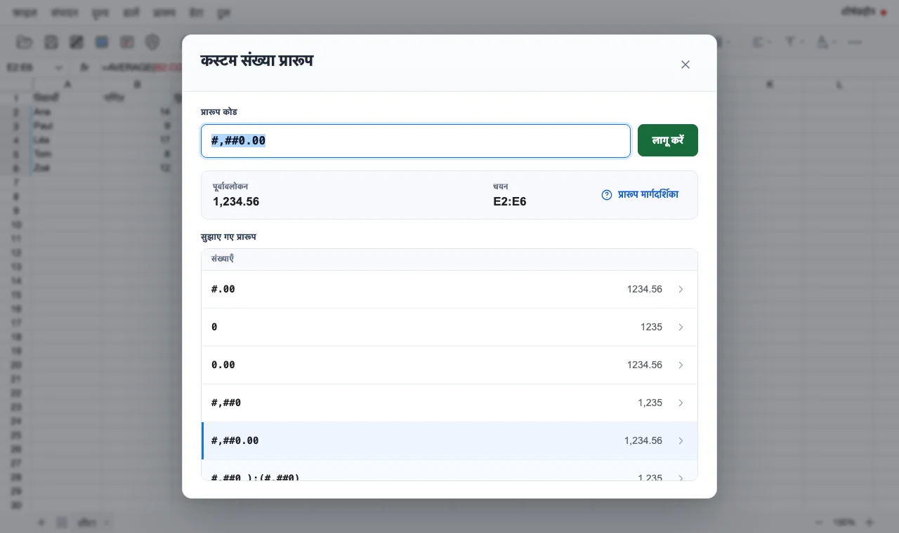

संख्या प्रारूप
प्रारूप संख्या का प्रदर्शन बदलता है, मान नहीं: गणनाएँ सभी दशमलव रखती हैं।
प्रारूप चुनना
प्रारूप › संख्या, या बटन पट्टी की स्वचालित सूची।
| प्रारूप | उदाहरण |
|---|---|
| स्वचालित | 1200.09 |
| सादा टेक्स्ट | 1200.09, बाएँ संरेखित; प्रविष्टि टेक्स्ट रहती है |
| संख्या | 1200.09 |
| प्रतिशत | 120009.00%; 0.25 का 25.00% हो जाता है |
| वैज्ञानिक | 1.20E+03 |
| लेखांकन | ₹(1,200.09) |
| मुद्रा | ₹1,200.09 |
| दिनांक, समय, दिनांक समय | दिनांक के लिए: 29/11/2017, 3:00 PM, 15:00… |
मुद्रा चिह्न इंटरफ़ेस की भाषा का होता है।
| बटन | परिणाम |
|---|---|
| प्रतिशत | |
| एक दशमलव कम | |
| एक दशमलव अधिक |
ये बटन सूची की संख्याओं पर भी चलते हैं। मान को ही पूर्णांकित करने के लिए ROUND का उपयोग करें।
कस्टम प्रारूप
प्रारूप › संख्या › कस्टम संख्या प्रारूप…: सुझाया प्रारूप चुनें या कोड लिखें। पूर्वावलोकन परिणाम दिखाता है; प्रारूप मार्गदर्शिका चिह्न याद दिलाता है; लागू करें उसे चयन को देता है।

| चिह्न | काम | कोड | 1234.5 दिखता है |
|---|---|---|---|
0 | एक अंक, शून्य भी | 0.00 | 1234.50 |
# | आवश्यक हो तो अंक | #.## | 1234.5 |
, | हज़ारों के समूह | #,##0 | 1,235 |
% | प्रतिशत | 0% | 123450% |
"टेक्स्ट" | टेक्स्ट, इकाई | 0.0 "m" | 1234.5 m |
E+00 | वैज्ञानिक संकेतन | 0.00E+00 | 1.23E+03 |
; | धनात्मक, ऋणात्मक, शून्य, टेक्स्ट के प्रारूप | 0;-0;"शून्य" | 1235 |
[Red] | रंग | 0;[Red]-0 | ऋणात्मक लाल में |
कोड भाषा के चिह्नों से लिखा जाता है; विंडो वह रूप दिखाती है जिसमें वह सहेजा जाता है (#,##0.00), Excel जैसा ही।
दिनांक और समय
| कोड | 29 अगस्त 2026, 14:30 |
|---|---|
dd/MM/yyyy | 29/08/2026 |
d mmm yyyy | 29 Aug 2026 |
dddd d mmmm yyyy | Saturday 29 August 2026 |
hh:mm | 14:30 |
dd/MM/yyyy hh:mm | 29/08/2026 14:30 |
महीनों और दिनों के नाम अंग्रेज़ी में दिखते हैं।
इकाइयाँ
इकाइयाँ में 0.00 "V", 0.00 "Ω", 0.00 "mm" जैसे प्रारूप: सेल संख्या ही रहता है, जिससे गणना होती है।